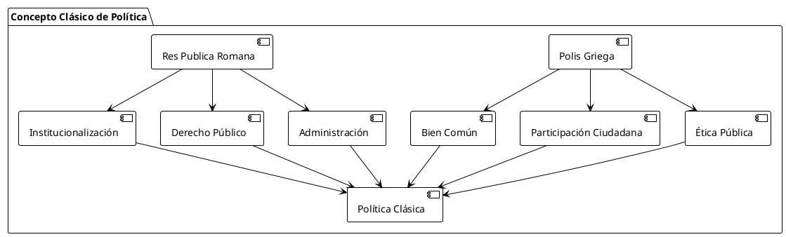
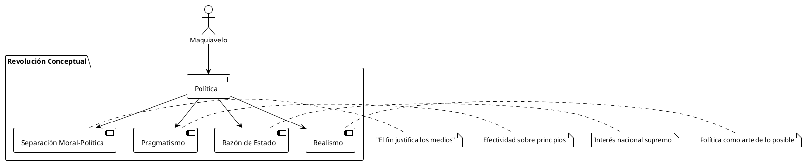
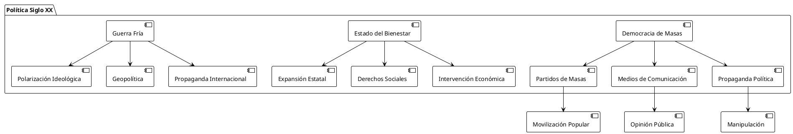
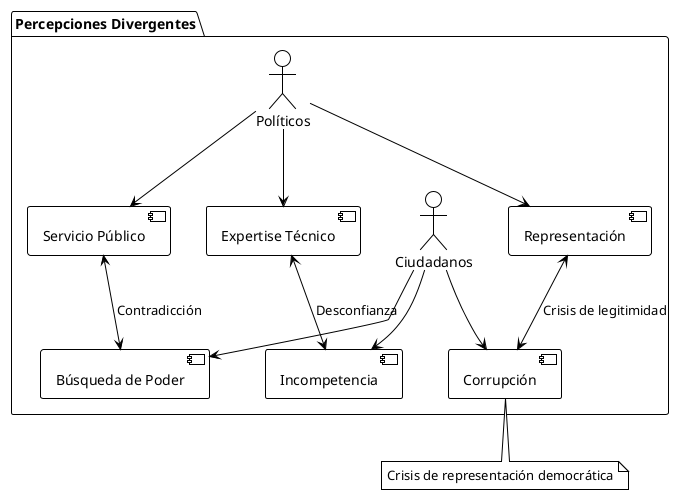
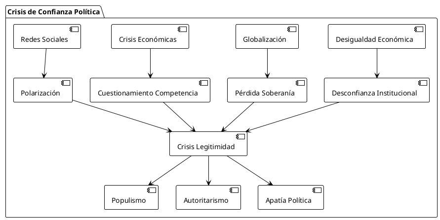
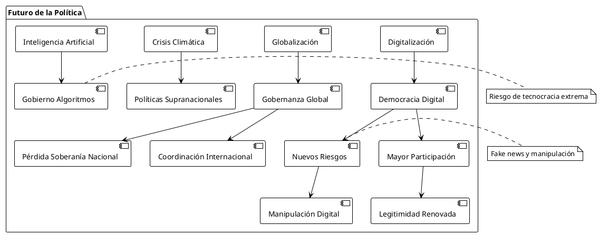
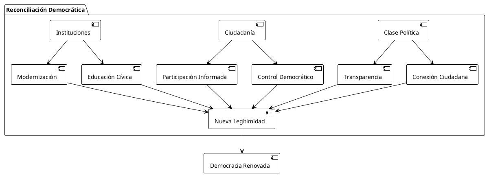

El Concepto de "Política": Análisis Crítico de su Evolución Histórica
El Concepto de "Política": Análisis Crítico de su Evolución Histórica y Percepción Contemporánea
Introducción
El término "política" ha experimentado una transformación radical desde sus orígenes clásicos hasta su interpretación contemporánea. Esta evolución semántica refleja no solo cambios en las estructuras de poder, sino también en la percepción ciudadana sobre la gestión de los asuntos públicos. El presente análisis examina críticamente esta evolución, contrastando la concepción teórica con la práctica real y las percepciones diferenciadas entre políticos y ciudadanos.
Orígenes Etimológicos y Conceptuales
Raíces Clásicas
El concepto de política deriva del griego politiké (πολιτική), relacionado con polis (πόλις), que significaba ciudad-Estado. Aristóteles definió la política como la "ciencia suprema" que busca el bien común de la comunidad. Esta concepción originaria establecía la política como:
- Arte de gobernar la ciudad
- Búsqueda del bien común (summum bonum)
- Actividad inherentemente ética
- Participación ciudadana activa
Evolución Romana
Los romanos ampliaron el concepto con res publica (cosa pública), enfatizando:
- Administración de bienes comunes
- Institucionalización del poder
- Separación entre lo público y privado
- Desarrollo del derecho público

Desarrollo Histórico del Concepto
Edad Media: Teología Política
Durante el período medieval, la política se reinterpretó bajo parámetros teológicos:
| Aspecto | Concepción Medieval | Implicaciones |
|---|---|---|
| Legitimidad | Origen divino del poder | Teocracia política |
| Finalidad | Salvación del alma | Subordinación a la Iglesia |
| Participación | Limitada a élites | Exclusión popular |
| Método | Revelación y tradición | Dogmatismo político |
Renacimiento: Maquiavelo y la Política Moderna
Nicolás Maquiavelo revolucionó el concepto político con "El Príncipe" (1513), introduciendo:
- Separación entre política y moral
- Pragmatismo gubernamental
- Razón de Estado
- Realismo político

Ilustración: Contractualismo y Soberanía Popular
Los pensadores ilustrados redefinieron la política basándose en:
Hobbes: Estado Absoluto
- Contrato social por supervivencia
- Leviatán como garante del orden
- Autoridad indivisible
Locke: Gobierno Limitado
- Derechos naturales inalienables
- Separación de poderes
- Consentimiento de los gobernados
Rousseau: Voluntad General
- Soberanía popular indelegable
- Democracia directa
- Bien común sobre intereses particulares
| Pensador | Concepto Clave | Implicación Política |
|---|---|---|
| Hobbes | Estado de naturaleza | Autoridad absoluta necesaria |
| Locke | Derechos naturales | Gobierno limitado y consensual |
| Rousseau | Voluntad general | Democracia participativa |
| Montesquieu | Separación de poderes | Equilibrio institucional |
Modernidad: Institucionalización y Profesionalización
Siglo XIX: Estado-Nación
La consolidación del Estado-nación moderno transformó la política en:
- Sistema burocrático profesional
- Partidos políticos organizados
- Sufragio ampliado progresivamente
- Ideologías políticas sistematizadas
Siglo XX: Democracia de Masas
El siglo XX introdujo nuevas dinámicas:

Situación Contemporánea: Divergencias Perceptuales
Visión de los Políticos Profesionales
Los políticos contemporáneos tienden a conceptualizar la política como:
Aspectos Positivos (Autodefinición)
- Servicio público vocacional
- Gestión técnica especializada
- Representación democrática
- Solución de problemas complejos
Características Operativas
- Negociación y consenso
- Expertise técnico
- Responsabilidad institucional
- Visión a largo plazo
Percepción Ciudadana
La ciudadanía contemporánea presenta una visión más crítica:
| Aspecto | Percepción Ciudadana | Evidencia Empírica |
|---|---|---|
| Motivación | Búsqueda de poder personal | Encuestas de confianza institucional |
| Competencia | Incompetencia técnica | Evaluación de políticas públicas |
| Honestidad | Corrupción sistémica | Índices de transparencia |
| Representatividad | Desconexión con realidad | Distancia social política-ciudadanía |

Análisis Crítico: Factores de Divergencia
Transformaciones Estructurales
Mediatización de la Política
La política contemporánea se caracteriza por:
- Predominio de la imagen sobre el contenido
- Simplificación de mensajes complejos
- Personalización del debate político
- Espectacularización del conflicto
Profesionalización Política
El surgimiento de una "clase política" profesional ha generado:
- Distanciamiento de la experiencia ciudadana común
- Desarrollo de intereses corporativos específicos
- Tecnificación del lenguaje político
- Burocratización de la participación
Factores Socio-económicos
| Factor | Impacto en la Percepción | Consecuencias |
|---|---|---|
| Desigualdad creciente | Desconfianza en instituciones | Populismo y anti-sistema |
| Globalización | Pérdida soberanía nacional | Nacionalismo reactivo |
| Crisis económicas | Cuestionamiento competencia | Búsqueda alternativas |
| Redes sociales | Información fragmentada | Polarización política |

Consecuencias de la Divergencia Conceptual
Impacto en la Democracia
La divergencia entre concepciones políticas genera:
Déficit Democrático
- Baja participación electoral
- Desconfianza en instituciones representativas
- Proliferación de movimientos anti-sistema
- Polarización extrema del debate público
Crisis de Representación
- Desconexión élite-ciudadanía
- Surgimiento de outsiders políticos
- Fragmentación del sistema de partidos
- Cuestionamiento de la democracia liberal
Respuestas Emergentes
Nuevas Formas de Participación
- Democracia participativa
- Consultas ciudadanas
- Plataformas digitales de participación
- Movimientos sociales horizontales
Reformas Institucionales
| Tipo de Reforma | Objetivo | Ejemplo |
|---|---|---|
| Transparencia | Mayor accountability | Leyes de acceso a información |
| Participación | Inclusión ciudadana | Presupuestos participativos |
| Control | Limitación poder político | Organismos anticorrupción |
| Representación | Mayor diversidad | Cuotas de género/etnia |
Perspectivas Futuras
Tendencias Identificadas

Desafíos Pendientes
Reconciliación Conceptual
- Recuperar dimensión ética de la política
- Equilibrar expertise técnico con legitimidad democrática
- Reducir brecha comunicativa política-ciudadanía
- Revitalizar cultura cívica participativa
Adaptación Institucional
- Incorporar nuevas tecnologías democráticas
- Flexibilizar estructuras representativas
- Fortalecer mecanismos de accountability
- Promover transparencia real
Conclusiones
Síntesis Analítica
El análisis revela una evolución del concepto político desde su origen clásico orientado al bien común hacia una percepción contemporánea marcada por la desconfianza y la instrumentalización. Esta transformación refleja cambios estructurales profundos en las sociedades modernas, pero también evidencia una crisis de legitimidad democrática que requiere respuestas innovadoras.
Diagnóstico Crítico
La divergencia perceptual entre políticos y ciudadanos no es meramente comunicacional, sino que refleja transformaciones estructurales que han alterado fundamentalmente la naturaleza de la actividad política. La profesionalización, mediatización y globalización han creado dinámicas que alejan la práctica política de su concepción original de servicio al bien común.
Recomendaciones
Para la Clase Política
- Recuperar conexión con experiencia ciudadana común
- Priorizar transparencia y accountability
- Simplificar comunicación sin perder rigor
- Fomentar participación ciudadana real
Para la Ciudadanía
- Desarrollar mayor comprensión de complejidad política
- Participar activamente en espacios democráticos
- Ejercer control ciudadano informado
- Evitar simplificaciones extremas
Para las Instituciones
- Modernizar mecanismos participativos
- Incorporar tecnologías democráticas
- Fortalecer transparencia y rendición de cuentas
- Promover educación cívica actualizada

Referencias
Fuentes Clásicas
- Aristóteles. (2009). Política. Madrid: Gredos. (Obra original publicada s. IV a.C.)
- Cicerón, M.T. (2001). De Re Publica. Barcelona: Planeta-Agostini. (Obra original s. I a.C.)
- Maquiavelo, N. (2010). El Príncipe. Madrid: Alianza Editorial. (Obra original 1513)
Pensamiento Político Moderno
- Hobbes, T. (2003). Leviatán. Madrid: Losada. (Obra original 1651)
- Locke, J. (2006). Segundo Tratado sobre el Gobierno Civil. Madrid: Tecnos. (Obra original 1689)
- Rousseau, J.J. (2007). El Contrato Social. Barcelona: Península. (Obra original 1762)
- Montesquieu, C. (2002). Del Espíritu de las Leyes. Madrid: Tecnos. (Obra original 1748)
Análisis Contemporáneo
- Bobbio, N. (1996). El futuro de la democracia. México: Fondo de Cultura Económica.
- Dahl, R. (2012). La democracia y sus críticos. Barcelona: Paidós.
- Held, D. (2007). Modelos de democracia. Madrid: Alianza Editorial.
- Manin, B. (1998). Los principios del gobierno representativo. Madrid: Alianza Editorial.
Estudios sobre Crisis Democrática
- Levitsky, S. & Ziblatt, D. (2018). Cómo mueren las democracias. Barcelona: Ariel.
- Mounk, Y. (2018). El pueblo contra la democracia. Barcelona: Paidós.
- Rosanvallon, P. (2020). El siglo del populismo. Barcelona: Galaxia Gutenberg.
- Tormey, S. (2015). The End of Representative Politics. Cambridge: Polity Press.
Fuentes de Datos
- Latinobarómetro. (2023). Informe Latinobarómetro 2023. Santiago: Corporación Latinobarómetro.
- Transparency International. (2024). Corruption Perceptions Index 2024. Berlín: TI.
- World Values Survey. (2022). Wave 7 Results. Estocolmo: WVS Association.
Eurobarómetro. (2024). Standard Eurobarometer 100. Bruselas: Comisión Europea.
El circo de la política: Desprestigio y traición al mandato popular
—
"La política es demasiado seria para dejarla solo en manos de los políticos"
- Charles de Gaulle
"La democracia es la peor forma de gobierno, excepto por todas las demás que se han intentado"
- Winston Churchill